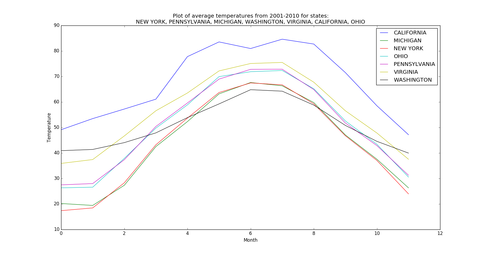
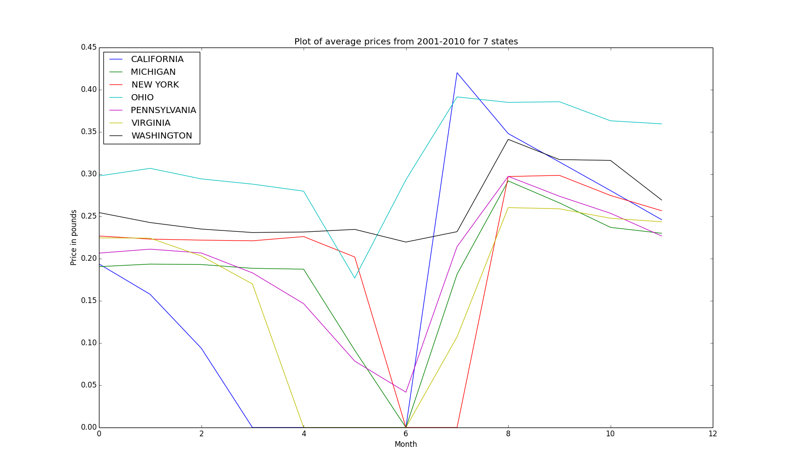
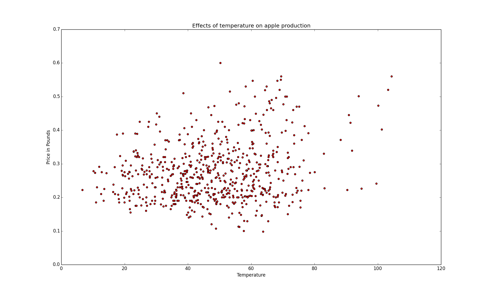

by Rodny Perez
Find out how the change in weather affects the price and the production of apples. A project for my class Introduction to Data Science that I took at Lehman College.
When I started this project, I wanted to know how much effect weather events, such as hurricanes and earthquakes, had over the price of all crops in the USA. However, due to it's complexity, I had to narrow it down to something much simpler. One day I read a post about how to grow apples. Within this post, the author says that "Apples grow best where there is cold in winter, moderate summer temperatures, and medium to high humidity." After reading this post, I got interested in knowing if what the author stated was true. Along with that, I wanted to incorporate my initial idea of knowing how the price of a crop changes depending on the weather. For this project, I want to know if there is a real correlation between the production of apples and the weather, as well as if there is a correlation between the price of the apples and the weather. To test my assumptions, I've used a correlation test. The code is written using Python and the graphs were created using matplotlib. The code is available on Github.
Seven (7) states that reported production of apples are evaluated in this project. These states are California, Michigan, New York, Ohio, Pennsylvania, Virginia and Washington. The dataset for the weather was collected from the NOAA website. This set contains the mean, max and min air temperatures from 2001 to 2010 for the 7 states mentioned above. The price information of apples was collected from USDA ESMIS . This dataset contains the annual summary of crop values by month, for each of the 7 states from 2001 to 2010. The price of the apples is determined in pounds.
To have a better idea as to how the weather looked like from 2001 to 2010 for the 7 states, I plotted the average weather data collected. In this graph, we can see how the temperatures oscillates between states. As expected lower temperatures for the period October-April and higher temperatures for the period May-August.
Additionally, I plotted the price data for apples for each state from 2001 to 2010. In this graph we can see that some states did not produce apples or reported earnings during the warmer months. Also, we can see a dramatic reduction in the reported earnings for all states for the aforementioned months.
The following graph reveals something interesting. Even though there is a high concentration in the production of apples on temperatures between 35 and 60 degrees, the price of apples increases slightly as temperature increases. After running a correlation test (price vs temperature), this slight increase can be noted as the result of the correlation test is of 0.224912643792. This result shows that the price of apples and temperature are positively correlated by a 22%.
{kind=link}
{kind=link}
{kind=link}
{kind=link}